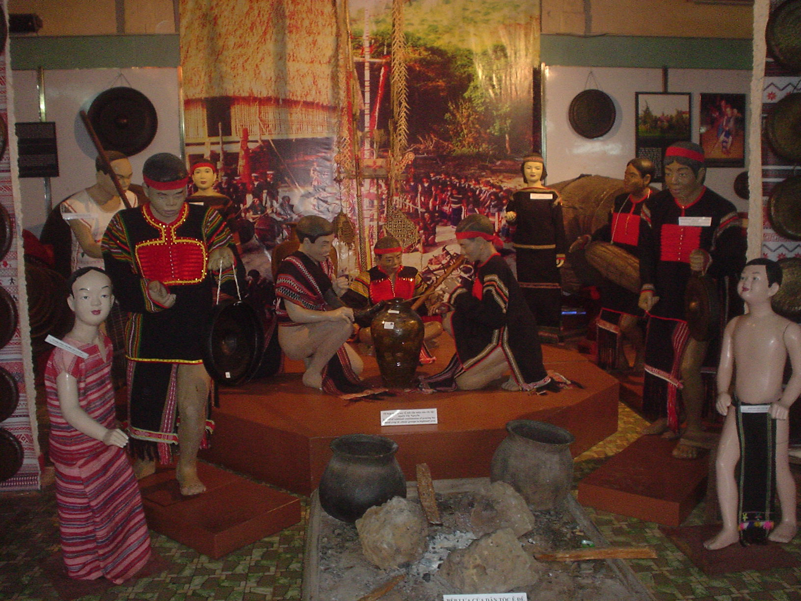
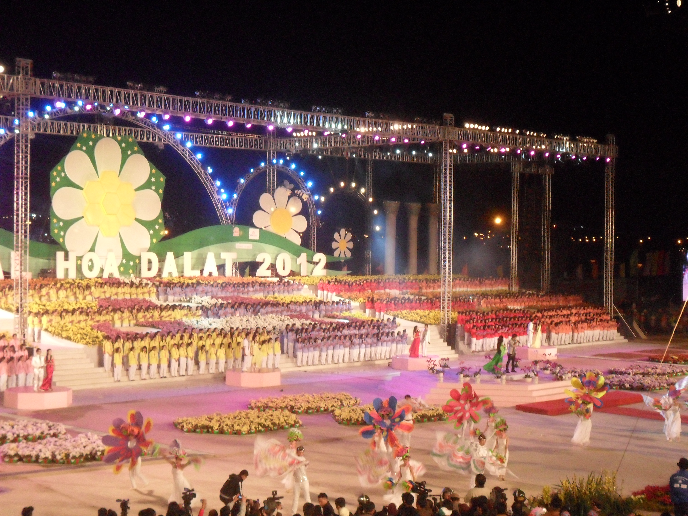
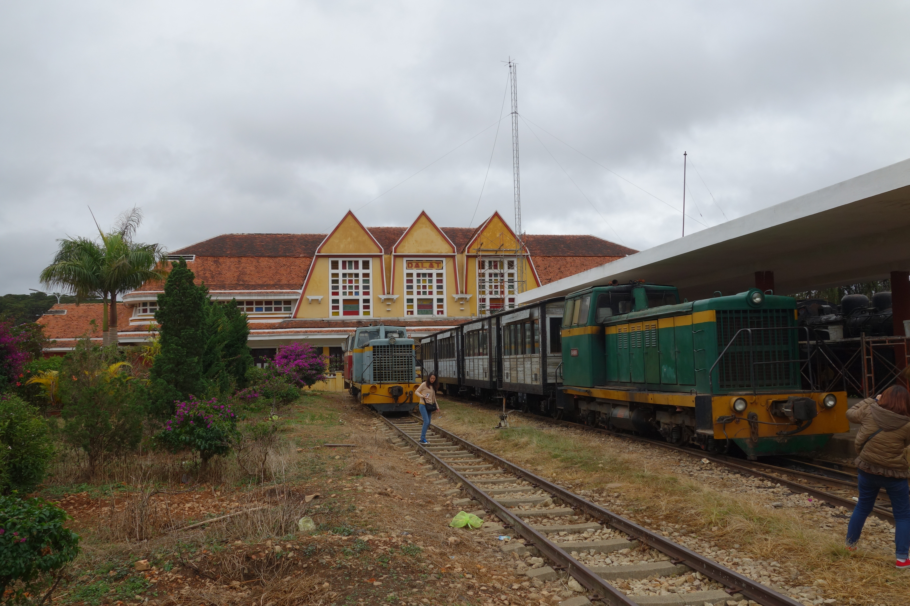
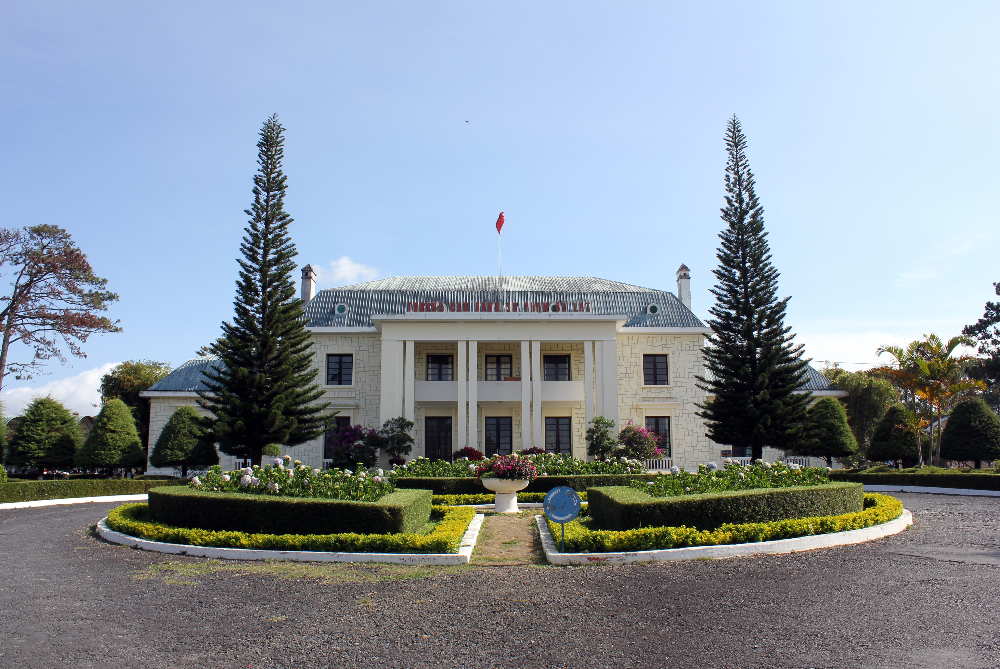

EXPLORE DA LAT
Văn hóa đặc sắc Đà Lạt
Không chỉ làm say lòng người bởi cảnh sắc thiên nhiên thơ mộng, Đà Lạt còn sở hữu chiều sâu văn hóa độc đáo. Đó là sự giao thoa hài hòa giữa văn hóa bản địa Tây Nguyên hùng vĩ, di sản kiến trúc Pháp cổ điển, những lễ hội hoa rực rỡ và cốt cách con người phố núi "Hiền hòa – Thanh lịch – Mến khách".

BẢN SẮC VĂN HÓA 01
Không gian văn hóa Cồng chiêng Tây Nguyên
Được UNESCO công nhận là Kiệt tác truyền khẩu và Di sản văn hóa phi vật thể của nhân loại, Không gian văn hóa Cồng chiêng là linh hồn của đồng bào dân tộc bản địa K'Ho (nhánh Lạch, Chil) sinh sống lâu đời trên cao nguyên Lâm Viên và dưới chân núi Lang Biang.
Trong quan niệm của người Tây Nguyên, tiếng cồng chiêng là ngôn ngữ thiêng liêng kết nối con người với thần linh (Yàng) và núi rừng đại ngàn. Vào những đêm hội bên ánh lửa bập bùng, âm vang trầm hùng của cồng chiêng hòa quyện cùng điệu múa xoang uyển chuyển tạo nên một không gian văn hóa đậm chất sử thi.
Hoạt động trải nghiệm nổi bật
Giao lưu cồng chiêng bên ánh lửa trại cùng nghệ nhân K'Ho dưới chân núi Lang Biang, nhảy múa xoang, thưởng thức rượu cần và thịt nướng bản địa.

BẢN SẮC VĂN HÓA 02
Lễ hội Festival Hoa Đà Lạt
Đà Lạt tự hào là "Thành phố Festival Hoa của Việt Nam" với lễ hội văn hóa – du lịch mang tầm quốc gia và quốc tế được tổ chức định kỳ vào tháng 12. Đây là dịp tôn vinh nghề trồng hoa truyền thống cùng giá trị thẩm mỹ của hàng ngàn loài hoa khoe sắc trên cao nguyên.
Trong suốt mùa lễ hội, toàn thành phố từ mặt nước Hồ Xuân Hương, Quảng trường Lâm Viên cho đến các làng hoa lâu đời như Vạn Thành, Thái Phiên, Hà Đông đều khoác lên mình tấm áo hoa lộng lẫy, kết hợp cùng các chương trình hòa nhạc, trình diễn thời trang tơ lụa và diễu hành xe hoa đường phố.
Hoạt động trải nghiệm nổi bật
Chiêm ngưỡng không gian hoa nghệ thuật quanh Hồ Xuân Hương, tham quan các làng hoa truyền thống và hòa mình vào đêm hội "Hoa và Âm nhạc".

BẢN SẮC VĂN HÓA 03
Di sản Kiến trúc Pháp – Đông Dương
Đà Lạt được ví như một "bảo tàng kiến trúc sống" với hàng trăm biệt thự cổ, nhà thờ và công trình công cộng mang đậm phong cách Pháp kết hợp tinh tế với kiến trúc bản địa Tây Nguyên. Tiêu biểu nhất là Ga Đà Lạt với ba chóp mái cách điệu từ ba đỉnh núi Lang Biang và mái nhà rông truyền thống.
Bên cạnh đó, dãy giảng đường cong bằng gạch đỏ của Trường Cao đẳng Sư phạm Đà Lạt (Lycée Yersin), Nhà thờ Con Gà, Nhà thờ Domaine de Marie hay Chùa Linh Phước khảm sành sứ tinh xảo đều là những dấu ấn kiến trúc và văn hóa tâm linh vượt thời gian của phố núi.
Hoạt động trải nghiệm nổi bật
Tham quan Ga xe lửa cổ Đà Lạt, trải nghiệm chuyến tàu du lịch Đà Lạt – Trại Mát, khám phá Trường Cao đẳng Sư phạm và các dinh thự cổ ẩn mình dưới tán thông.

BẢN SẮC VĂN HÓA 04
Cốt cách người Đà Lạt & Văn hóa Trà – Cà phê phố núi
Trải qua hơn một thế kỷ hội tụ cư dân từ khắp mọi miền đất nước, người Đà Lạt đã hun đúc nên phong cách ứng xử đặc trưng: "Hiền hòa – Thanh lịch – Mến khách". Giọng nói nhẹ nhàng, nhịp sống khoan thai giữa sương mù bảng lảng khiến bất cứ ai đặt chân đến đây cũng cảm thấy bình yên và gần gũi.
Nét văn hóa ấy còn thể hiện rõ qua thói quen nhâm nhi tách cà phê nóng hay chén trà Atiso, trà Ô Long thơm ngát vào buổi sớm mai se lạnh. Từ những quán cà phê cổ nhuốm màu thời gian ở khu Hòa Bình, những quán nhạc Trịnh mộc mạc trên sườn đồi cho đến vùng trà Cầu Đất trăm năm tuổi, tất cả đã dệt nên chất thơ rất riêng của Đà Lạt.
Hoạt động trải nghiệm nổi bật
Thưởng thức cà phê sáng trong sương sớm, tham quan đồi chè Cầu Đất, thưởng trà Atiso và lắng nghe những giai điệu acoustic ấm áp giữa đêm lạnh cao nguyên.
Bản sắc văn hóa Đà Lạt
Từ âm vang cồng chiêng đại ngàn dưới chân núi Lang Biang, sắc màu rực rỡ của Festival Hoa, vẻ đẹp cổ kính của di sản kiến trúc Đông Dương cho đến cốt cách hiền hòa, thanh lịch của con người phố núi — tất cả đã hòa quyện để tạo nên một Đà Lạt vừa thơ mộng vừa đậm đà bản sắc văn hóa.